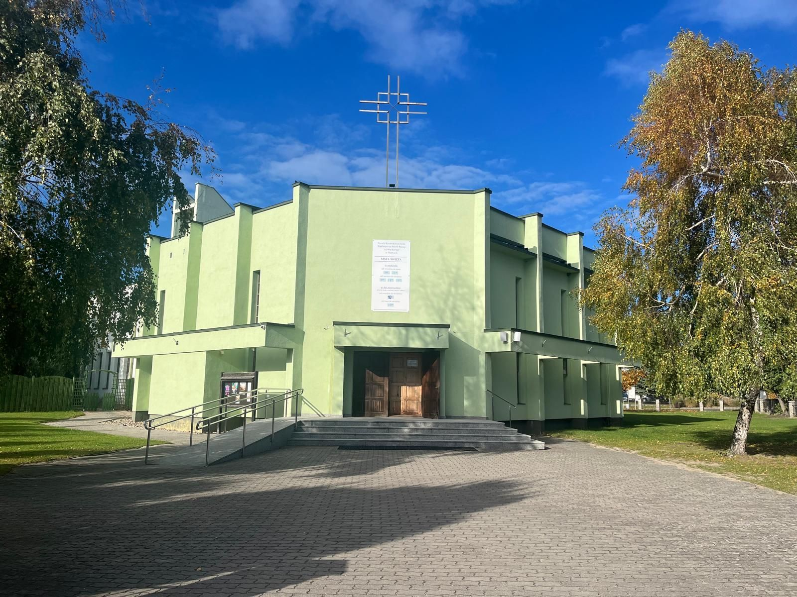
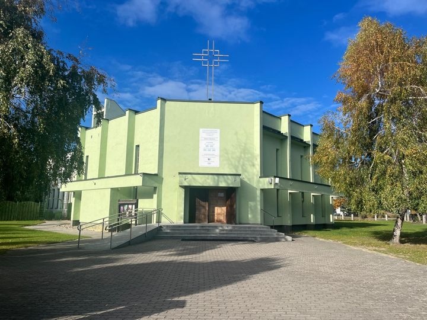
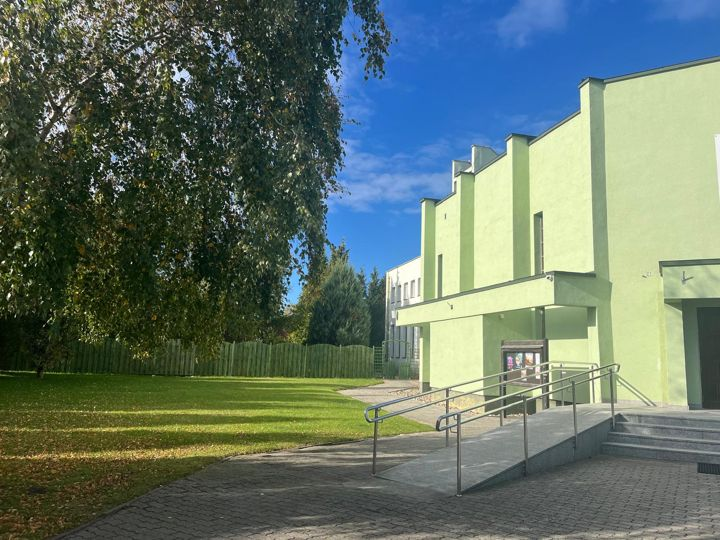
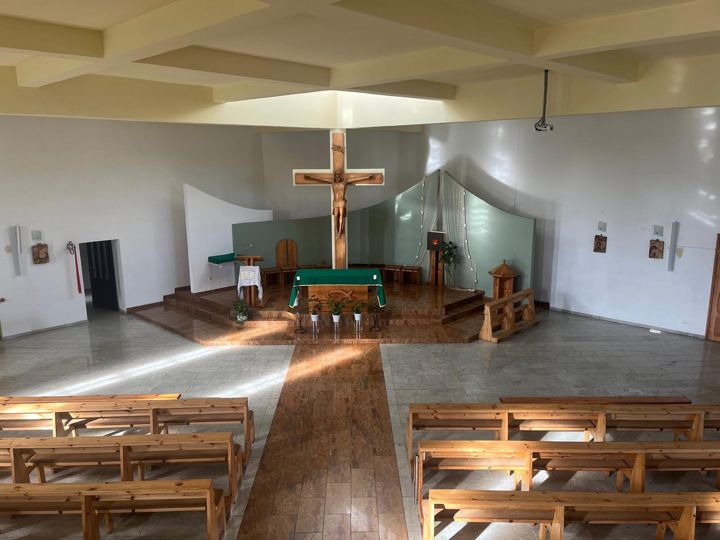
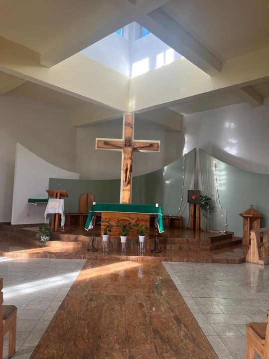
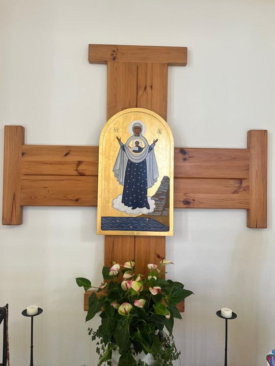
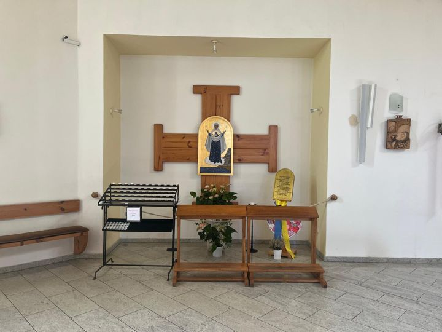

Niedziele i święta
- wrzesień – majobowiązuje teraz9:0011:00
- czerwiec – sierpień9:0011:0019:30
Sezon letni
Dąbki · gmina Darłowo · diecezja koszalińsko-kołobrzeska
Witamy parafian i wczasowiczów. Tu znajdziesz godziny mszy świętych, aktualne ogłoszenia i drogę do kościoła.

Rozkład zmienia się z sezonem letnim.
Sezon letni
Wtorek–sobota
Wtorek–sobota
25 października – 1 listopada 2026
Podziwiając mądrość natury i prawdę o przemianach form życia patrzmy na wszystko w świetle wiary w Stwórcę wszystkiego. Szczęść Boże!
ks. Andrzej Pęcherzewski, proboszcz
Matka Boża z Góry Karmel to tytuł Maryi związany ze szkaplerzem karmelitańskim. Jej wspomnienie Kościół obchodzi 16 lipca, w samym środku sezonu letniego, kiedy Dąbki są pełne gości.
Budowę kościoła w Dąbkach rozpoczęto w 1985 roku. Jasne, przestronne wnętrze z drewnianym krzyżem nad ołtarzem i ikoną Matki Bożej gromadzi przez cały rok parafian, a latem także wczasowiczów.
Kościół i jego wnętrze. Kliknij zdjęcie, aby je powiększyć.

Kościół od frontu
Wejście z podjazdem dla wózków
Wnętrze kościoła
Ołtarz i krzyż pod świetlikiem
Ikona Matki Bożej
Kaplica Matki BożejTu na stronie docelowej pojawi się mapa Google z zaznaczonym kościołem.